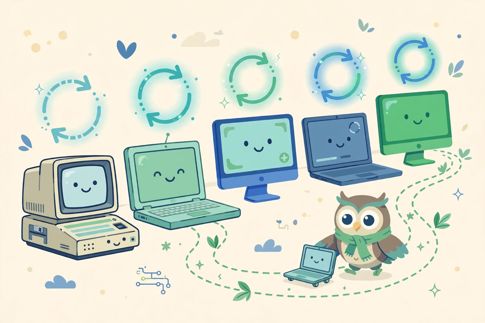

A bright station where old computers of every era are brought current. Mascot: Uma the Update Owl, pictured below.
A bright hall where old computers of every era stand in a row, each with a glowing circle above it, waiting to be brought current.
Four stops along a path — 1990s, 2000s, 2010s, modern — and Uma the Update Owl guides each machine to its stop.
Programs, tools, lenses and models sit in labeled bins, ready for the next plan.
A plan finder (era plus system finds a matching refresh plan) and an era finder (a year finds its era). The tools run on this page. They do not reach the web, ask for a key, or change any system.
Pick an era and a system, and the station shows a matching refresh plan.
Type the year it was made.
Designs, printables and demos only. Free, downloadable, usable on this page. Each item is labeled Signature or Fun. Nothing here is for sale.
A poster of the station, drawn from this page's hero art.
Making: Print on card and hang it.
A printable timeline of the four eras, with the systems each era covers.
Making: Print and pin it beside the machine you are bringing current.
A set of smiling-computer stickers for notebooks and cases.
Making: Print on sticker paper and cut out the shapes. Fun only.
A pocket card that lists the steps of a refresh plan in plain words.
Making: Print on card and tick each step as it is done. Fun only — it changes no system by itself.
Fun and entertainment only — never fact.
Fun — invented for fun, not a record. Uma once met a computer from 1995 that asked for the news from the future. Fun only.
Fun — invented for fun, not a record. A 1990s machine is said to have waited thirty years for its turn and to have been perfectly patient. Fun only.
Fun — invented for fun, not a record. The glowing circle above the station is said to spin once for every machine brought current. Fun only.